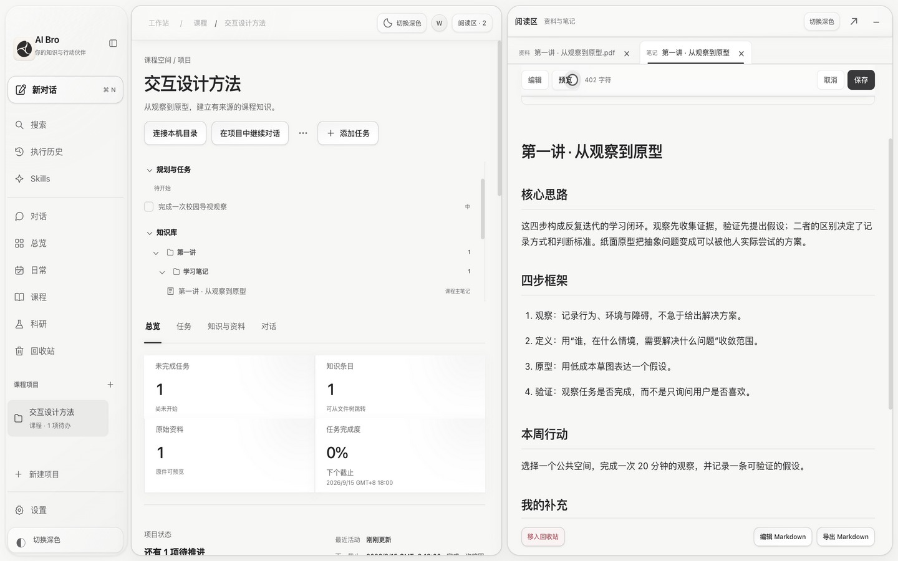

01 LEARN
让课程有一条主线。
课件按课程与章节归档，分析集中到可编辑的 Markdown。对照原件复习，让考核要求、知识脉络和学习任务保持关联。
交互设计方法├ 第一讲│ ├ 课程讲义.pdf│ └ 学习笔记.md└ 待办 · 完成一次访谈
 AI Bro
AI Bro
一份课件不止能总结，一篇论文不止能问答。把原始资料、自己的理解和待办连接起来，让 AI 在持续积累的知识里，陪你把事情推进。
持续对话 · 判断归属 · 执行动作从课件到自己的理解，从已有知识到下一项任务。用 1 分 46 秒，看看 AI Bro 如何把这些连接起来。
在同一个工作区里，交给 AI、核对来源、留下理解，再继续提问。每一步都有可以打开和修改的成果。
同一套知识与行动结构，适应不同的工作方式。空间划分保持清晰，相关内容可以通过项目、来源和对话相互找到。
课件按课程与章节归档，分析集中到可编辑的 Markdown。对照原件复习，让考核要求、知识脉络和学习任务保持关联。
从论文链接或文件开始，整理方法、实验、局限与自己的启发。文献库连接原件、研究笔记和引用关系，支持去重与增量更新。
把出行、个人项目和琐事交给 AI。后续补充时间或改变安排时，更新原任务；也可以直接手动修改、移动和完成。
在新会话里直接提到课程或项目，AI 会检索已经保存的相关笔记与资料。回答关联可打开的来源，让你核对依据、补充理解，而不是在一串聊天记录里反复寻找。
完成度、活动趋势与计划时间轴一起呈现。查看某一天的变化，跳回对应任务或资料，把图表变成继续工作的入口。
7 / 30 天活动趋势，真实日期的计划时间轴。
悬停看详情，选择日期，打开对应的实际条目。
完成、修改优先级和时间，或移动到合适的项目。
不必把所有事情交给同一个模型，也不必把所有资料交给同一个云服务。
本地保存，按需连接。使用模型时，相关内容会发送到你选择的提供商；开启同步时，支持的资料会发送到自己的服务器。模型密钥和本机目录授权不随工作区同步。
可以调节的工作区、能找回的内容，以及清楚可见的状态。让复杂工作流保持顺手。
预览版已按 AGPL-3.0 开源，可自行构建。首个公开 App 安装包正在准备，下载状态请查看 Releases。
适用于 Apple Silicon Mac，macOS 12 及以上。内置 Python 与 PDF 运行时，下载后无需单独安装。
前往 GitHub Releases ↗预览版尚未经过 Apple 公证。原生玻璃需要 macOS 26。查看源码、运行本地服务，或自行构建桌面 App。安装指南包含环境要求、构建与版本校验步骤。
打开构建指南 ↗开发构建需要 Node.js 与 Python。完整依赖见指南。